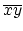
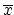
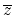

In combinational logic design, a Boolean function is classically expressed as sum of minterms. For example, F(x, y, z) = z + yz + xy + xyz is a Boolean function, where z,yz, xy , and xyz are the minterms (MTs) of the function. Usually, minterms are represented using their binary or decimal representation. For example, minterm z can be represented as 001(binary) or simply as 1(decimal) and minterm yz can be represented as 011(binary) or 3(decimal). Using this numeric representation of minterms, the above function can be expressed as F(x, y, z) = S(1, 3, 6, 7) or F(x, y, z) = S(001, 011, 110, 111). Very often, the binary representation of minterms are used for computer based processing of Boolean function.
Using the Boolean algebra theorem Ax + A = A, we can combine two product terms to generate a reduced product term. For example, z + yz = z and xy + xyz = xy. The reduced product terms of a function are called prime implicants (PIs) of the function. Therefore, a Boolean function can be expressed as sum of prime implicants. For example, the above function can be expressed as F(x, y, z) = z + xy. Very often, the prime implicants are represented using binary notation, where a missing variable is represented by `-' . For example, the prime implicant z is represented as 0-1 and xy is represented as 11-. Then the above function can be expressed as F(x, y, z) = S(0-1, 11 -).
Most of the prime implicant generation algorithms generate more prime implicants than the minimum requirement. For example, for the above function, minterms 001 and 011 generate the prime implicant 0-1, minterms 110 and 111 generate the prime implicant 11- , and minterms 011 and 111 generate the prime implicant -11. But the prime implicant -11 is not required for expressing the function. Therefore, given a set of minterms and a set of prime implicants for a function, it is required to find a minimal subset of the prime implicants that covers all the minterms of the function. The problem is indeed an optimization problem. An algorithm exists for this problem called cover most algorithm, which is discussed below.
Cost of a prime implicant is the number of 0's and 1's in the prime implicant. For example, the cost of the prime implicant 0-1 is 2. A prime implicant covers a minterm if and only if the prime implicant can be expanded to produce the minterm. For example, the prime implicant 0-1 covers the minterms 001 and 011.
In cover most algorithm, the first choice is a prime implicant that covers maximum number of minterms. If more than one prime implicant cover the same number of minterms, the choice is the prime implicant with the minimum cost. Tie is broken by selecting the first prime implicant in order. The algorithm is illustrated below for the above function using the following table. A `x' in the table indicates covering.
| MT | 001 | 011 | 110 | 111 | Cost | No of |
| minterms | ||||||
| PI | covered | |||||
| 0-1 | X | x | 2 | 2 | ||
| 11- | X | x | 2 | 2 | ||
| -11 | x | x | 2 | 2 |
The first choice is the prime implicant 0-1. Then the problem reduces to the following table.
| MT | 110 | 111 | Cost | No of |
| minterms | ||||
| PI | covered | |||
| 11- | x | X | 2 | 2 |
| -11 | X | 2 | 1 |
The next choice is the prime implicant 11-. Then the problem reduces to null and the minimum cover of the given prime implicants is 0-1 and 11-.
You need to write a program to find the minimal cover of prime implicants for a given set of prime implicants and a set of minterms for a function. You also need to identify whether the given set of prime implicants covers all the minterms of the function or not. If the given set of prime implicants does not cover all the minterms, the minimal cover produced by this algorithm will not cover the given function.
The input may contain multiple test cases. Each test case starts with three integers in a line for number of variables, number of minterms, and number of prime implicants as shown in the sample input. In the next line(s) minterms are listed separated by space or new line as shown in the sample input. In the following line(s) prime implicants are listed separated by space or new line. The range of number of variables is 2 to 20. Number of minterms and number of prime implicants will not exceed 200. The input terminates with three zeros for number of variables, number of minterms, and number of prime implicants.
For each test case in the input, print the test case number followed by either `No of required PIs = < value >' or `PIs don't cover all MTs' depending on the input case as shown in the sample output. Print a blank line between two successive test cases.
4 7 5 0001 0010 0101 0110 1001 1101 1110 --01 -11- 0-1- 0--1 -1-1 4 8 5 0000 0010 0100 1000 1010 1011 1100 1101 ---0 -10- 101- 01-- 0-0- 4 9 5 0000 0010 0011 0100 1000 1010 1011 1100 1101 ---0 -10- 101- 01-- 0-0- 5 15 6 00110 00100 01110 01100 11000 11010 11110 11100 10110 10100 01111 01101 11111 11101 10001 -11-- --1-0 001-- 11--0 10001 01-11 0 0 0
Test #1: No of required PIs = 3 Test #2: No of required PIs = 3 Test #3: PIs don't cover all MTs Test #4: No of required PIs = 4